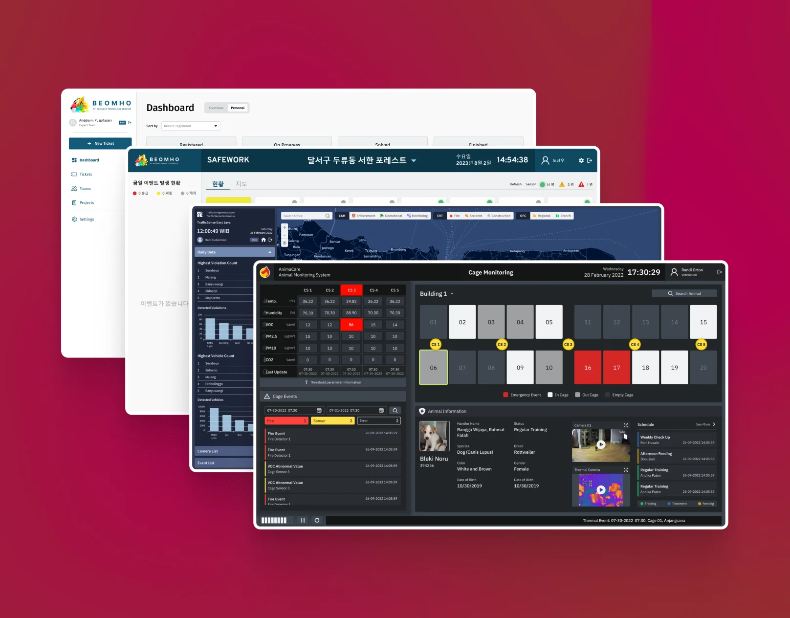
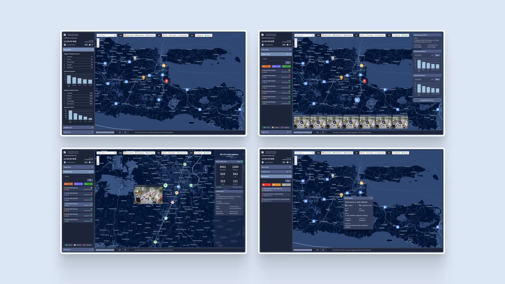
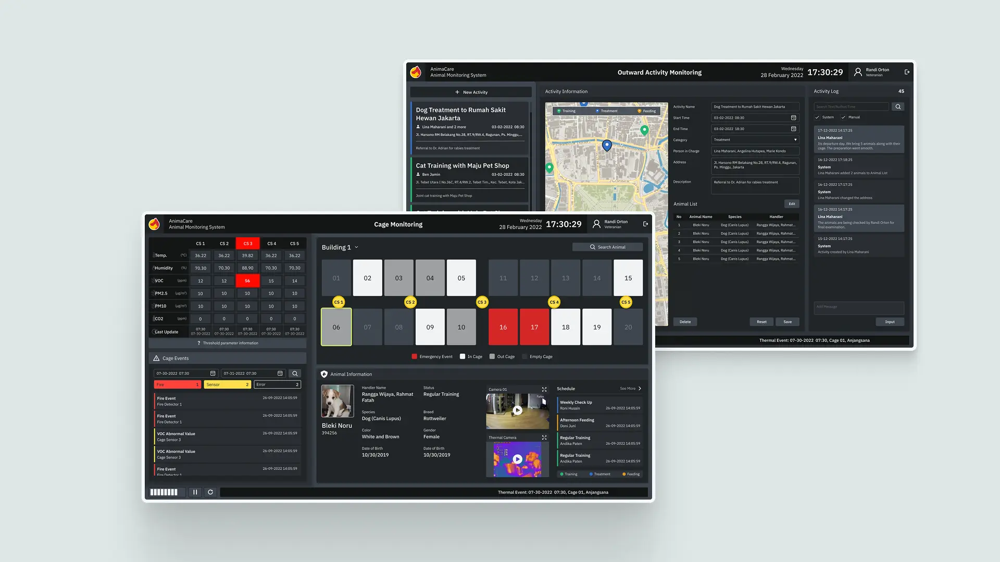
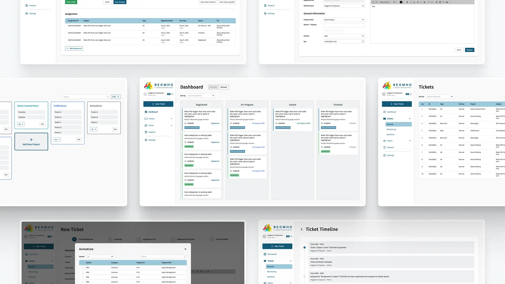
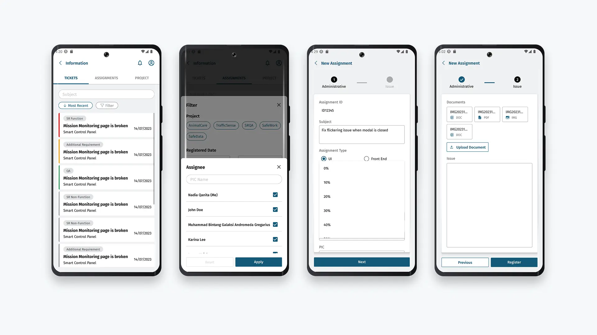
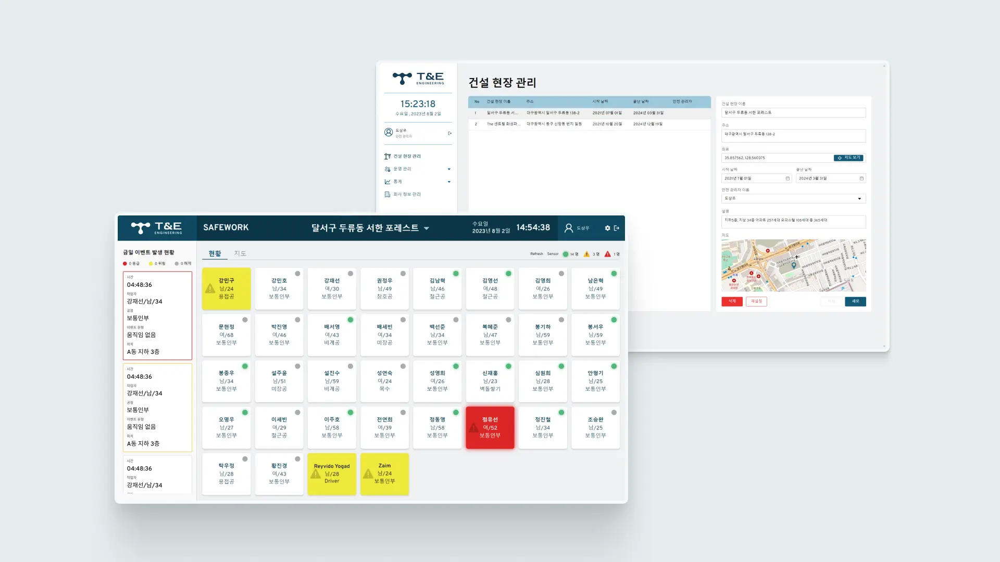
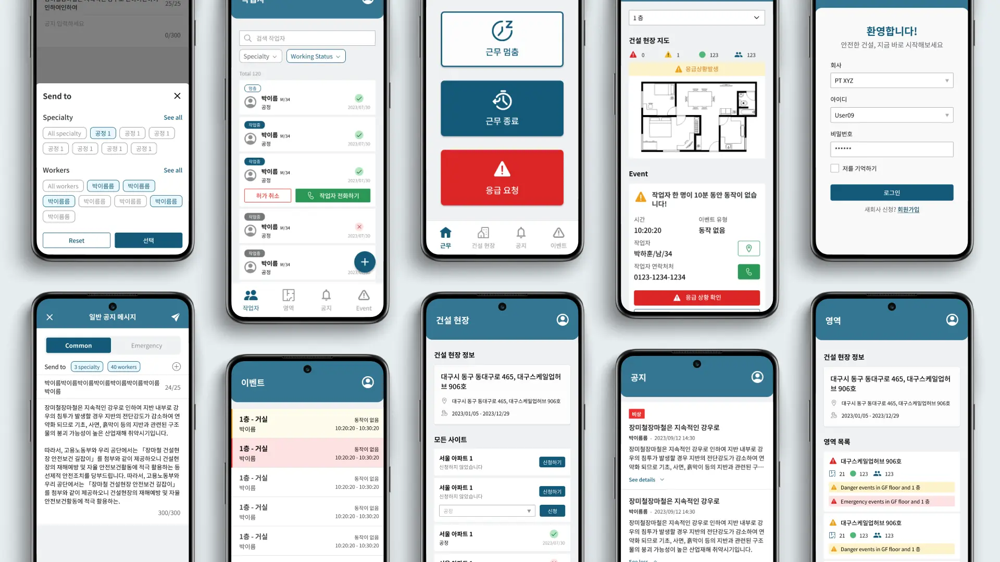

Real-time environment monitoring system
Works at BeomhoTS - UI/UX Design and Engineering

- Project Type
- Professional work completed during my employment at BeomhoTS
- Period
- June 2022 – September 2024
- About
- BeomhoTS specializes in IoT and AI technology consulting for government and private sectors, offering IoT monitoring systems and in-house web/mobile app development.
- Role
- UI Designer, UI Engineer
- Tools and Technology
- Figma, Figjam, Notion, Gitlab, VS Code, CSS3, React Native
Traffic Management System
Analytic and Monitoring Web Dashboard
- About
- A real-time monitoring system that counts detected vehicle and captures traffic violations, providing data for traffic management and enforcement.
- Responsibility
-
- Design UI with direction from PM.
- Implement UI into reusable code using HTML, CSS, and JS.
- Collaborate with developers to integrate code with backend, improve usability, and fix errors.

*All real data has been replaced with dummy data to protect confidentiality.
Animal Monitoring System
Control and Monitoring Web Dashboard
- About
- A real-time system that tracks facility environment conditions, monitors animals and display their data. It also offers management of animal schedules.
- Responsibility
-
- Design UI and gather user feedback in collaboration with PM.
- Implement UI into reusable code using HTML, CSS, and JS.
- Collaborate with developers to integrate code with backend, improve usability, and fix errors.

*All real data has been replaced with dummy data to protect confidentiality.
Ticket Handling Software
Web-based Management Dashboard
- About
- An internal web dashboard for company employees to report project-related complaints and manage task assignment and monitoring.
- Responsibility
-
- Design web version UI with direction from PM.
- Plan, build, and maintain UI components and style guide for web version.
- Implement UI into reusable code using HTML, CSS, and JS for web and React Native for mobile app.
- Collaborate with developers to integrate code with backend, improve usability, and fix errors.


Construction Safety Monitoring System
Web Dashboard and Mobile Tracking App
- About
- A system consists of a web dashboard that manages the construction site and monitors on-site worker attendance and work accidents. It also includes a mobile app used by managers and workers to send alerts, log attendance, and track positions for safety precautions and accident handling.
- Responsibility
-
- Design part of web dashboard and mobile app UI.
- Implement UI into reusable code using HTML, CSS, and JS for web and React Native for mobile app.
- Collaborate with developers to integrate code with backend, improve usability, and fix errors.

